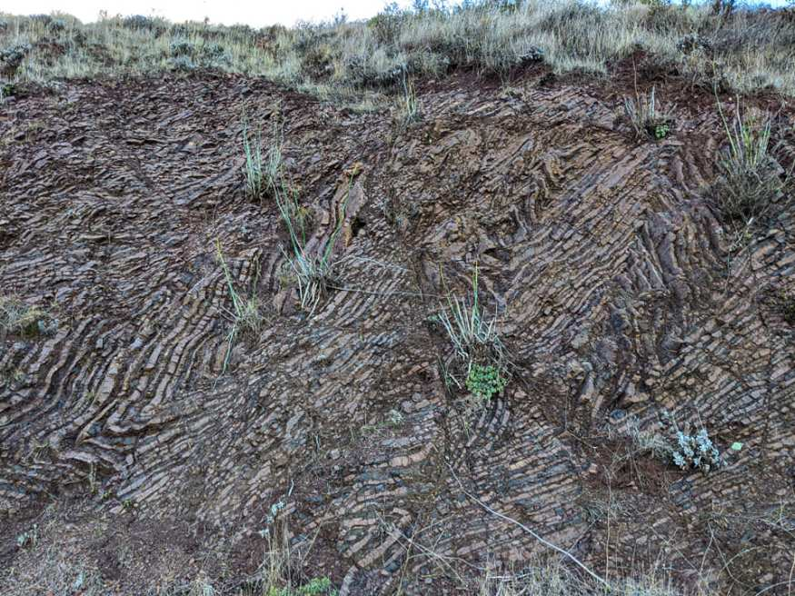

Colorful metamorphics at Ruby Island, Lake Wanaka, New Zealand
Stromatolites (~1.1 Ga) at Horseshoe Harbor, Copper Harbor, MI

Stromatolites (~1.1 Ga) at Horseshoe Harbor, Copper Harbor, MI
Folded radiolarian ribbon chert in the Marin Headlands, San Francisco Bay Area, CA
